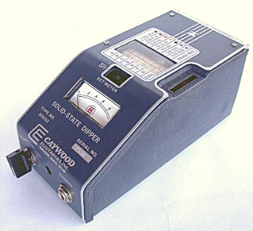

| The solid-state version of the famous
Grid-Dip Meter. Being solid-state the AC line cord was eliminated and
battery operation was incorporated. Operation between this model and
its predecessor, the 90651 is essentially the same. The protective
polypropylene carrying case shown in the top picture was delivered with
each 90652. In a 1974 QST ad the 90652 sold for $125. These are still
available today from James Millen Electronics. After the breakup of The James Millen Manufacturing company in 1977, Mr. R. Wade Caywood bought the equipment side of the company and formed Caywood electronics. He continued to sell the 90652 Dipper under his new company logo. We are not sure how many of these were produced under his labeling and they seem to be rather rare. Below is a picture of the Caywood version. 
|